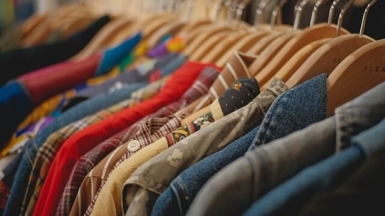
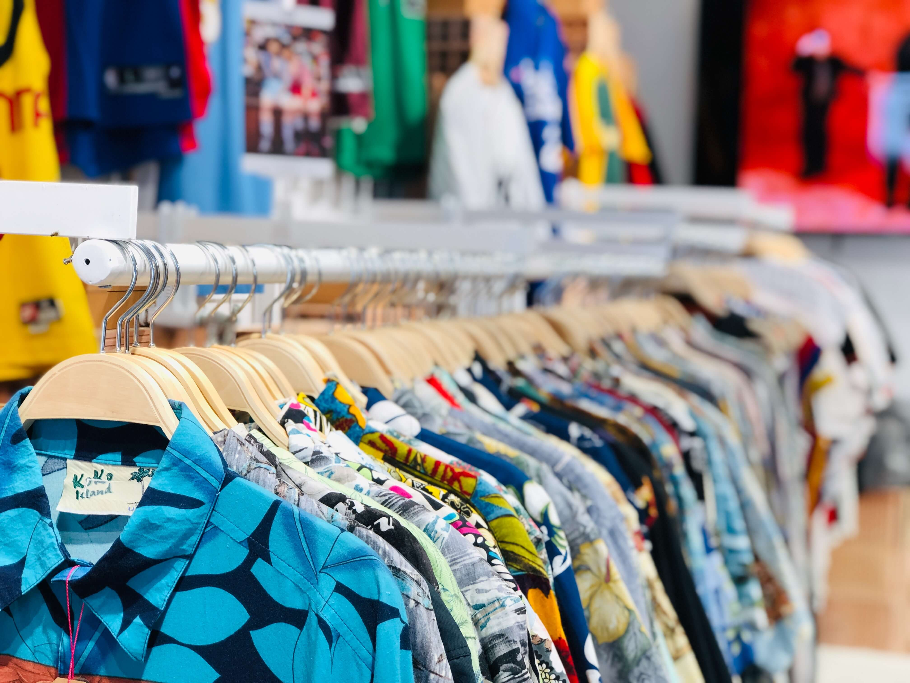

<main id="main">
  <section>
    <div class="container" data-aos="fade-up">
      <div class="row">
        <div class="col-lg-12 text-center mb-5 mt-3">
          <h1 class="">Sobre nosotros</h1>
        </div>
      </div>
      <div class="row mb-5 d-flex align-items-center">
        <div class="col-6">
          
        </div>
        <div class="col-6">
          <h2 class="mb-4 display-5">Equipo</h2>
          <p>TylerVintage es una tienda de ropa vintage de propiedad y gestión familiar. Nos enorgullece ofrecer una amplia selección
            de ropa vintage de alta calidad y accesorios únicos a nuestros clientes en  el mundo. Fundada en 1995 por nuestra
            abuela, PaperVintage se ha convertido en un negocio próspero gracias al trabajo duro y la dedicación de nuestra familia
            y empleados.</p>
        </div>
      </div>
      <div class="row mb-5 d-flex align-items-center">
        <div class="col-6">
          <h2 class="mb-4 display-6">Misión, visión y valores</h2>
          <p><strong>Misión</strong>: ofrecer a nuestros clientes ropa vintage auténtica y de alta calidad a precios accesibles, mientras proporcionamos
            un servicio excepcional y una experiencia de compra única. Nos esforzamos por mantener una selección diversa y exclusiva de
            prendas y accesorios vintage, cuidando cada detalle para que nuestros clientes se sientan especiales.</p>
          <p><strong>Visión</strong>: convertirnos en la tienda líder a nivel europeo en la venta de ropa vintage auténtica y sostenible,
            siendo referentes en la industria por nuestra responsabilidad social y ambiental. Buscamos proporcionar una experiencia
            de compra emocionante y satisfactoria para nuestros clientes en toda Europa, cuidando cada detalle y creando un vínculo
            emocional con ellos.</p>
          <p><strong>Valores</strong>: nos guiamos por valores fundamentales que rigen nuestro trabajo diario. Valoramos la autenticidad,
            la sostenibilidad, la responsabilidad social y la transparencia en cada acción que realizamos. Creemos
            en la importancia de tratar a nuestros clientes, proveedores y colaboradores con respeto, empatía y honestidad.
            Asimismo, nos esforzamos por fomentar la creatividad y la pasión por la moda vintage en cada uno de nuestros equipos de trabajo.</p>
        </div>
        <div class="col-6">
          
        </div>
      </div>
    </div>
  </section>
</main>
